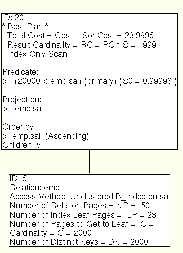
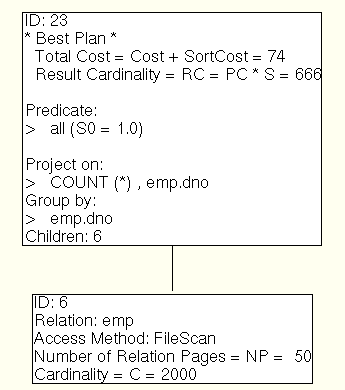

Here are some example queries and plans to demonstrate some of the different points of the Minibase optimizer. In the examples given, we have four different joins available: tuple-oriented nested loops, page-oriented nested loops, index nested loops, and sort-merge. The catalog used contains the following two tables:
emp 5 2000 36 50 empid 1 I 0 999999999 4 0 1 B_Index 23 A 1 0 2000 1 2 emp-B_Index-empid ename 2 T A Z 20 4 1 Hash 1 R 1 0 2000 1 1 emp-Hash-ename dno 3 I 0 999999999 4 24 1 Hash 1 R 1 0 2000 1 1 emp-Hash-dno jno 4 I 0 999999999 4 28 1 B_Index 23 A 1 0 2000 1 2 emp-B_Index-jno sal 5 I 0 999999999 4 32 2 B_Index 23 A 1 0 2000 1 2 emp-B_Index-sal FileScan 50 R 0 dept 2 2000 24 50 dno 1 I 0 999999999 4 0 1 Hash 1 R 1 0 2000 1 1 dept-Hash-dno dname 2 T A Z 20 4 1 FileScan 50 R 0
select sal
from emp
where sal > 20000 and dno > 5
If you want more details:
Minibase Optimizer output
Click here for the iterator tree
Since almost all of the relation is returned, a simple file scan is best.

select sal
from emp
where sal > 20000
If you want more details:
Minibase Optimizer output
Click here for the iterator tree
Even though most of the tuples should match the selection, because
an index is present on emp.sal, and it is the only attribute we need,
an index-only scan is the best.

select distinct ename
from emp
Note that there is an additional expense to sort. If index-only scans on hash indexes were considered, the index would be used instead.
If you want more details:
Minibase Optimizer output

select dno, count(*)
from emp
group by dno
If you want more details:
Minibase Optimizer output
If we supported full index scans on hash indexes, the access method would be the hash index (with an index-only scan).
Note that although the Minibase optimizer can deal with
SQL queries containing Group By, Having, Order By and aggregate
operations, the runtime system cannot execute queries with these
features.
Back to the List of Components
Back to the Minibase Home Page
{kind=link}
{kind=link}